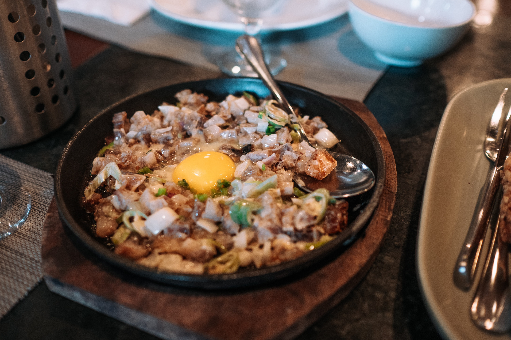

Sisig

Description
Sisig is a delectable Filipino dish renowned for its bold flavors. Typically made with finely chopped, sizzling pig's face and ears, it's seasoned with tangy calamansi juice, spicy chili peppers, and savory soy sauce. Often garnished with a crispy topping, such as chicharrón, it offers a delightful contrast of textures. Sisig embodies the essence of Filipino cuisine, combining the rich heritage of flavors with a satisfyingly crispy and zesty profile.
Ingredients
- 2 pounds pig face (snouts, ears, and jowls)
- 1 cup vinegar
- ¼ cup soy sauce
- 1 head garlic, peeled and crushed
- 1 teaspoon whole peppercorns
- 2 bay leaves
- 1 tablespoon salt
- water
- 1 large onion, peeled and diced
- 6 Thai chili peppers, stemmed and minced
- ½ cup calamansi juice
- 1 tablespoon Liquid seasoning (I used Maggi)
- ½ cup liver spread
- pepper to taste
Steps
- In a large pot, combine pig face, vinegar, soy sauce, garlic, peppercorns, bay leaves, about 1 tablespoon salt, and enough water to completely cover pork.
- Bring to a boil, skimming scum that floats on top. Lower heat, cover, and simmer for about 50 minutes to 1 hour or until meat is tender. Remove from heat and drain well, discarding liquid.
- Over a hot grill, grill pork for about 7 to 10 minutes on each side or until crisp and slightly charred. Or arrange in a single layer on a baking sheet and broil in a 450 F oven for about 4 to 5 minutes or until nicely charred.
- Remove from heat, allow to cool to touch, and chop meat.
- In a large bowl, combine chopped meat, onions, chili peppers, calamansi juice., and liquid seasoning.
- And liver spread and gently stir to combine. Season with salt and pepper to taste.
- To serve, transfer to sizzling hot plates.